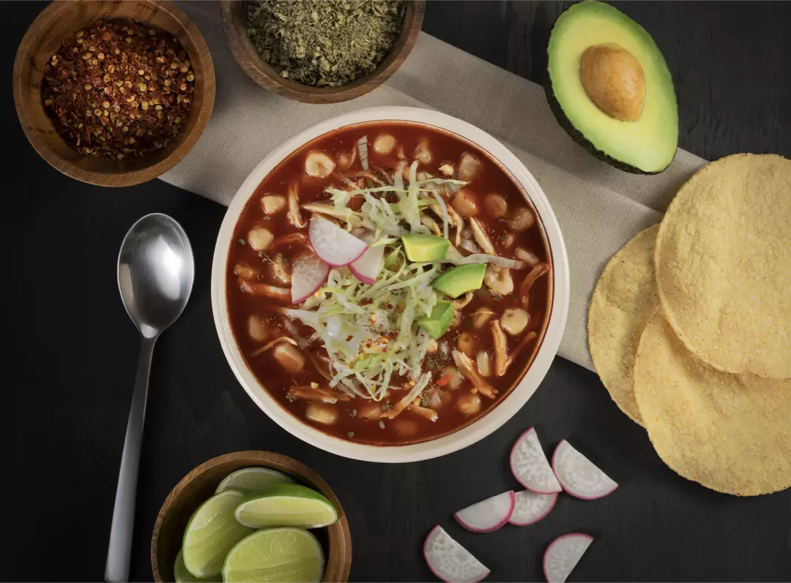
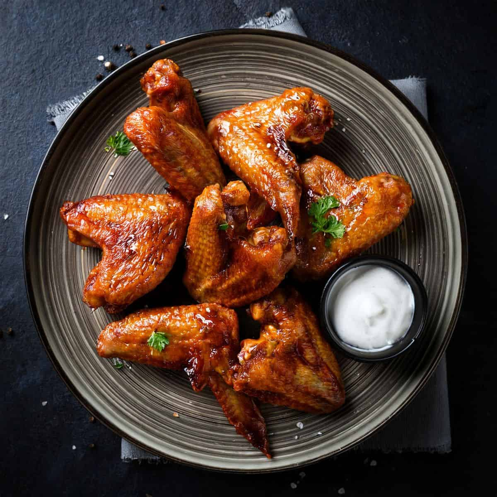

01
Elige
Selecciona platillos del menú con precios y descripción clara.
Restaurante · Cocina con estilo
Sabores frescos, presentación elegante y una experiencia cálida. Explora nuestro menú o haz tu orden en minutos.



En Ámbar cuidamos cada detalle: sabor, presentación y atención. Ideal para una comida tranquila o para llevar.
Proceso de pedido
Un flujo simple y elegante para pedidos.
Selecciona platillos del menú con precios y descripción clara.
Revisa tu orden, agrega notas y selecciona "para llevar" o número de mesa.
Te mostramos el tiempo estimado y seguimiento en tiempo real.
Accede a los platillos y prepara tu primera orden.